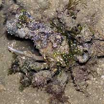
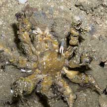
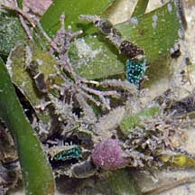

|
|
| crabs text index | photo index |
| Phylum Arthropoda > Subphylum Crustacea > Class Malacostraca > Order Decapoda > Brachyurans |
| Spider
crabs Superfamily Majoidea updated Dec 2019
Where seen? Spider crabs are encountered on all our shores. But they're hard to spot. In addition to being slow-moving and well camouflaged, many are also small. Features: Body width 0.5-3cm. These crabs are well disguised. They have long, skinny legs that give them their common name. Some have legs and bodies that resemble roots or other bits of debris so they blend perfectly with their surroundings. Body usually triangular, tapering to a point at the head with the small eyes on the sides of the tip. The body is often covered with spines, knobs and hooked hairs. Some decorate themselves with living seaweeds, sponge, other animals or bits of coral and rubbish.They are also slow-moving, so it's hard to penetrate their disguise. |
 Decorated upperside |
 Underside, only the pincers are 'undecorated'. Chek Jawa, Aug 05 |
 Almost impossible to spot until it moves. Cyrene Reef, Jul 10 |
| Special Spider: Our tiny spider
crabs are cousins of the biggest crab in the world! The Japanese spider
crab (Macrocheira kaempferi), with a leg span of 4m, belongs
to the same family. Human uses: Unfortunately, the Velcro crab (Camposcia retusa) is among those sold in the live aquarium trade. Some large spider crabs in temperate seas are important commercially as seafood. They are harvested by the ton. These include the Canadian snow crab (Chionoecetes opilio) which can have a body width of about 16cm, leg span of 90cm, and weigh more than 1kg; and the European spiny spider crab (Maja squinado) which can have a body width of 8.5-20cm and pincers up to 1m long! Status and threats: One of our spider crabs are listed among the threatened animals in Singapore. However, like other creatures of the intertidal zone, they are affected by human activities such as reclamation and pollution. Trampling by careless visitors and over-collection can also have an impact on local populations. |
| Some Spider crabs on Singapore shores |
| Superfamily
Majoidea recorded for Singapore from Wee Y.C. and Peter K. L. Ng. 1994. A First Look at Biodiversity in Singapore *from Tan, Leo W. H. & Ng, Peter K. L., 1988. A Guide to Seashore Life. **from Lim, S., P. Ng, L. Tan, & W. Y. Chin, 1994. Rhythm of the Sea: The Life and Times of Labrador Beach. ***Ng, Peter K. L. and Daniele Guinot and Peter J. F. Davie, 2008. Systema Brachyurorum: Part 1. An annotated checklist of extant Brachyuran crabs of the world. in red are those listed among the threatened animals of Singapore from Davison, G.W. H. and P. K. L. Ng and Ho Hua Chew, 2008. The Singapore Red Data Book: Threatened plants and animals of Singapore.
|
Links
|